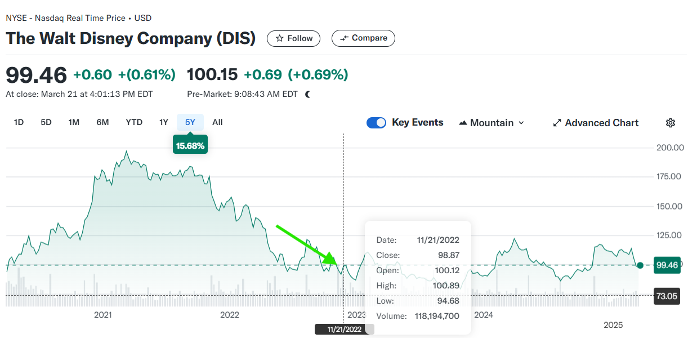
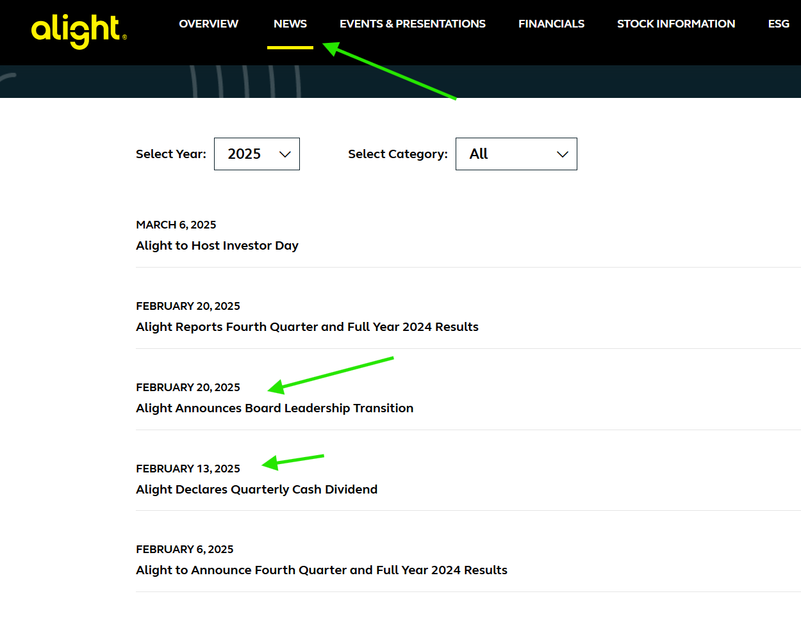
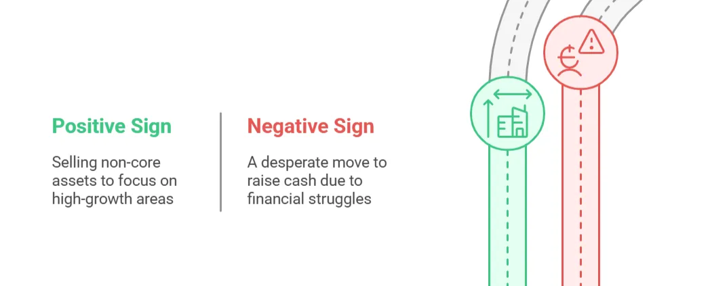
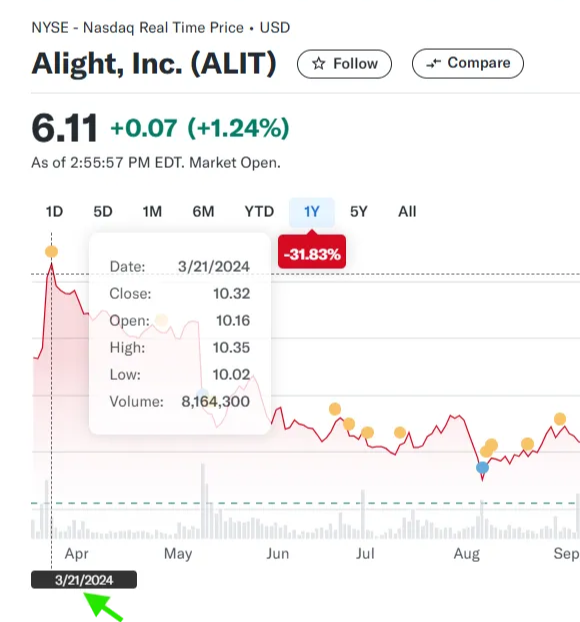
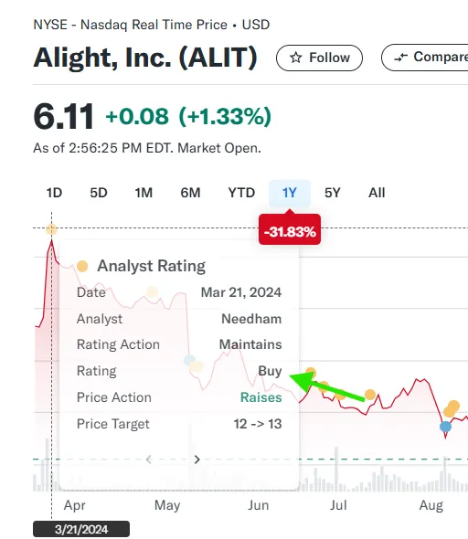
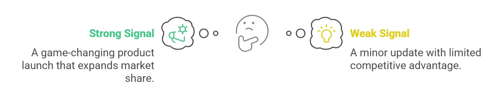

Common reasons companies issue press releases beyond earnings — and what each one signals.
There are many reasons a company puts out a press release. These four cover the most common — and the ones that move the stock the most. Each has its own thing to read for.
When a CEO, CFO, or board chair steps down, it can indicate:


When a company announces a merger or acquisition (M&A), it's a major event shared through a press release on its investor relations website.
M&A can signal growth if the deal strengthens the company's competitive position, adds valuable assets, or fuels innovation. However, it can also be a red flag — a struggling company might acquire another to cover financial weaknesses, or an expensive deal could burden the buyer with debt.
Companies sometimes sell off parts of their business to focus on core operations or raise capital. This can be a strategic move to improve efficiency or an indicator of financial distress.



New product releases often lead to stock movements, especially for companies reliant on innovation.

| Press release type | Read for |
|---|---|
| Leadership changes | Why — succession plan, forced exit, or strategic hire |
| M&A | Strategic fit + premium paid + financing |
| Divestitures | Why selling + what they'll do with the proceeds |
| Product launches | New segment or refresh; TAM signal |
Keep this open as you work through your company's press releases.